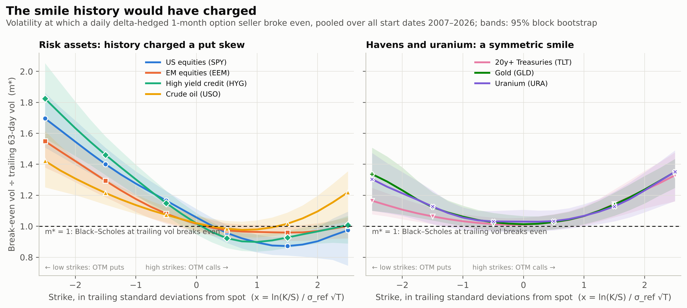
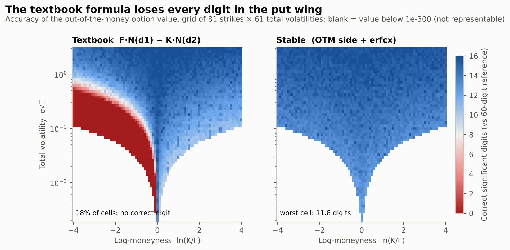
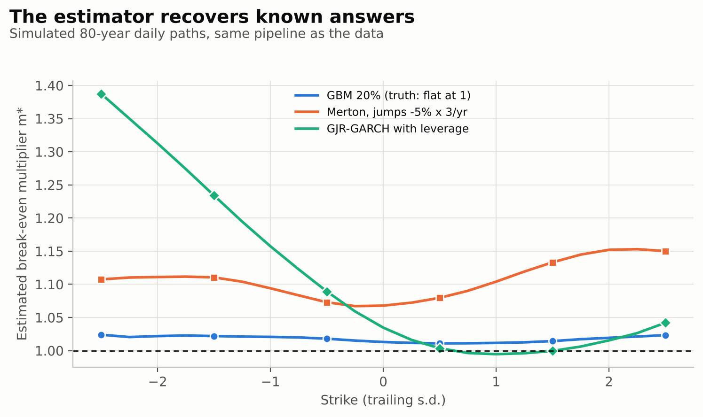
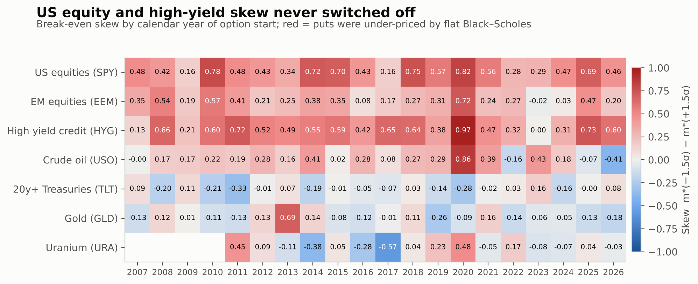
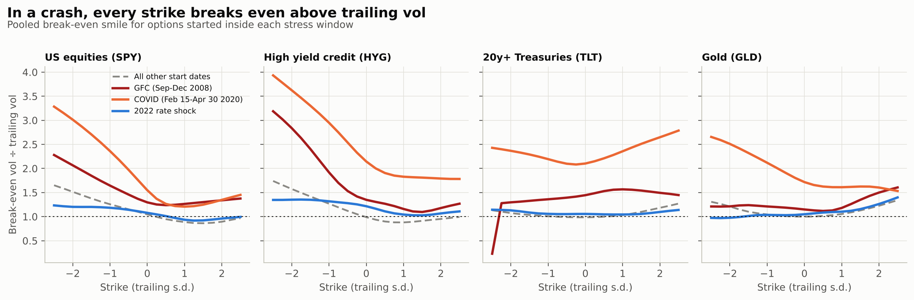
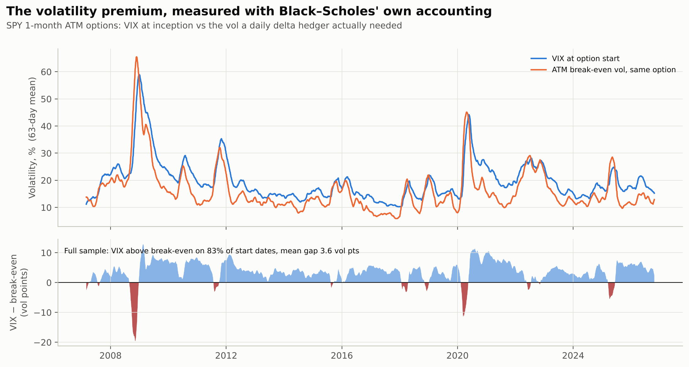
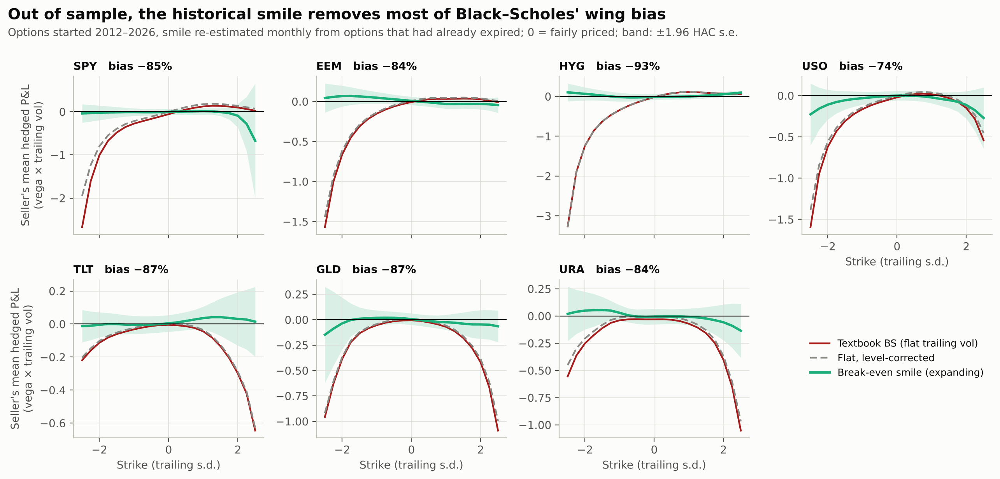

Working paper · Project 04
Break-even Black–Scholes volatilities by strike across seven asset classes, 2007–2026, and a pricer that keeps its digits in the wings
Project 04 of 30 Quant Research Projects · Working paper, November 2026

Black–Scholes has one free input, volatility, and the textbook way to fill it in is trailing realised volatility. This paper asks what that number should have been, strike by strike, judged by the hedging argument behind the formula. A delta-hedged option seller who quotes volatility σ earns ½ Σ Γ S² (σ² dt − R²). The σ that sets this to zero is the break-even volatility. It is a gamma-weighted realised volatility that depends on the strike, because gamma sits in different places for different strikes. I compute it for daily-hedged one-month options on a standardised strike grid at every trading day from January 2007 to October 2026, on seven ETFs covering US and emerging-market equities, high-yield credit, crude oil, long Treasuries, gold and uranium. That is 33,719 option paths per strike.
Main findings
Part I is the engineering underneath. The textbook formula F·N(d1) − K·N(d2) returns no correct digit in 18% of a standard (moneyness × volatility) grid. These are deep out-of-the-money puts priced through put–call parity. The pricer here prices the out-of-the-money side directly with the scaled complementary error function. It keeps at least 11.8 correct digits everywhere against a 60-digit reference, and its implied-volatility solver inverts every representable price to within 3.3 × 10⁻¹³.
Every introductory Black–Scholes project prices an option with a volatility taken from history and stops. Every options desk knows the market does not quote a single volatility: it quotes a smile. The usual explanation is that the smile is risk-neutral: it reflects crash fear and risk premia, not physical reality. That claim is testable without any option data. Black–Scholes is also an accounting identity. Its P&L decomposition says exactly what volatility a hedger needed, path by path and strike by strike. If the physical world also produces a smile, part of the market smile is simply fair value.
Research question. If you had sold every one-month option and delta-hedged it daily from 2007 to 2026, which volatility would have made you break even at each strike? Does that "realised smile" differ from flat? Does its shape differ by asset class? Does it predict where flat Black–Scholes will misprice next?
Ideas this builds on: the gamma-weighted break-even volatility of Bergomi (Stochastic Volatility Modeling, 2016, ch. 1) and Dupire's work on the realised P&L of a delta hedge; the variance risk premium (Carr and Wu 2009; Bollerslev, Tauchen and Zhou 2009); and Jäckel (2015, "Let's be rational") on the numerics of implied volatility. To my knowledge the break-even smile has not been published across asset classes, over two decades, with formal inference and an out-of-sample test.
src/bs.py implements Black-76 on the forward with a discount factor, so the same function prices
equity (Black–Scholes–Merton with yield q), futures and FX options. It provides analytic Greeks (delta,
gamma, vega, theta, rho, vanna, volga) and an implied-volatility solver.
Two choices matter for accuracy.
Implied volatility. The quote is mapped to the normalised out-of-the-money call. The solver iterates Newton steps on log price in total volatility. A bracket is always maintained, and the solver falls back to bisection whenever a Newton step would leave it. Quotes outside the no-arbitrage bounds return NaN.

| Pricer | Median correct digits | Worst cell | Cells with no correct digit | IV round-trip max rel. error |
|---|---|---|---|---|
| Textbook F·N(d1) − K·N(d2) | 13.2 | < 0 | 17.8% | n/a |
| Stable (this repo) | 14.7 | 11.8 | 0.0% | 3.3 × 10⁻¹³ (0 failures in 2,891) |
Grid: ln(K/F) ∈ [−4, 4] (81 points) × σ√T ∈ [0.002, 3] (61 points, log-spaced); reference: mpmath at 60
digits; results/accuracy_summary.csv.
This matters for the rest of the paper. Out-of-the-money puts at 2.5 standard deviations are exactly where the break-even smile is steepest. A pricer that rounds them to zero would hide the effect this paper measures.
For a path S₀, …, S_n rebalanced every h days, the seller of an option quoted at σ and delta-hedged at σ earns, to second order,
P&L(σ) = ½ Σⱼ Γⱼ(σ) Sⱼ² (σ² h/252 − Rⱼ²), Rⱼ = S_{j+h}/S_j − 1.
The drift of S drops out of this gamma–theta form, so no expected-return assumption is needed. Rates are set to zero; for one-month options the financing term is below 0.5% of vega at any rate seen in the sample.
data/vix_daily.csv, from the datasets/finance-vix mirror on GitHub).Hypotheses, fixed before the results were inspected.
| Statistic | H₀ | Expected | |
|---|---|---|---|
| H1 skew | S = m*(−1.5) − m*(+1.5) | S = 0 | S > 0 for SPY, EEM, HYG |
| H2 convexity | C = ½[m*(−1.5) + m*(+1.5)] − m*(0) | C = 0 | C > 0 for all |
| H3 level | L = m*(0) − 1 | L = 0 | not rejected |
| H4 VRP | SPY ATM sold at VIX | mean P&L = 0 | > 0 overall, < 0 in crises |
| H5 OOS | mean abs. bias, expanding smile vs flat | no gain | gain > 0 |
Inference. The 1,000-replicate moving-block bootstrap resamples start dates in blocks of 63 trading days. That is three times the overlap of the paths, so serial dependence from overlapping options is preserved. Within each hypothesis family, a Holm correction runs across the seven assets. Time-series means use Newey–West standard errors with 42 lags.
The same pipeline runs on 80 years of simulated daily data (src/validation.py):

| Simulated world | m*(−1.5) | m*(0) | m*(+1.5) |
|---|---|---|---|
| GBM, constant 20% vol (truth: flat 1) | 1.02 | 1.01 | 1.01 |
| Merton, σ = 15%, 3 jumps/yr of −5% ± 3% | 1.11 | 1.07 | 1.13 |
| GJR-GARCH(1,1) with leverage, no jumps | 1.23 | 1.04 | 1.00 |
Under GBM the estimator is flat at 1, apart from a 1–2% upward bias. That bias is the Jensen effect of dividing by an estimated trailing vol, and it is small next to the effects below.
The Merton row is the key interpretive result. Even large negative jumps produce a symmetric smile, not a skew. With daily hedging, a jump is charged at the gamma of the strike where the spot was before the jump. Jumps add variance at every strike, and that convexity is all they produce. A skew needs variance to be higher when the price is lower, the leverage effect. The GJR row shows that this alone reproduces the equity shape.
Pooled break-even multipliers (results/breakeven_smiles.csv, results/hypothesis_tests.csv):
| Asset | m*(−2.5) | m*(−1.5) | m*(0) | m*(+1.5) | m*(+2.5) | Skew [95% CI] | Convexity [95% CI] |
|---|---|---|---|---|---|---|---|
| SPY | 1.70 | 1.40 | 1.06 | 0.87 | 0.97 | +0.53 [0.45, 0.61] | +0.08 [0.04, 0.13] |
| HYG | 1.82 | 1.46 | 1.02 | 0.93 | 1.01 | +0.53 [0.44, 0.64] | +0.18 [0.13, 0.21] |
| EEM | 1.55 | 1.29 | 1.02 | 0.96 | 1.00 | +0.33 [0.25, 0.42] | +0.11 [0.08, 0.14] |
| USO | 1.42 | 1.21 | 1.02 | 1.02 | 1.22 | +0.20 [0.11, 0.30] | +0.10 [0.06, 0.13] |
| TLT | 1.17 | 1.06 | 1.01 | 1.14 | 1.33 | −0.08 [−0.14, −0.01] | +0.09 [0.06, 0.13] |
| GLD | 1.34 | 1.12 | 1.01 | 1.14 | 1.35 | −0.02 [−0.10, 0.08] | +0.12 [0.08, 0.16] |
| URA | 1.30 | 1.13 | 1.03 | 1.13 | 1.35 | 0.00 [−0.15, 0.13] | +0.10 [0.04, 0.14] |
Holm-adjusted p-values: skew < 0.001 for SPY, HYG, EEM and USO; TLT 0.06; GLD and URA 1.00. Convexity < 0.001 for all seven. ATM level: no asset rejects (smallest Holm p = 0.63, SPY).
results/stress_smiles.csv, "All other start dates").
Stability. SPY's yearly skew is positive in all 20 calendar years, from +0.16 in 2009 to +0.82 in 2020. HYG's is positive in all 20 as well, although only barely in 2023 (+0.001). Gold's is positive in just 7 of 20 years and changes sign 8 times. Treasuries lean slightly to a call skew in crisis years (2008: −0.20, 2011: −0.33, 2020: −0.28), the flight-to-quality rally.

Stress windows (results/stress_smiles.csv). For options started inside a crisis, every strike breaks
even above trailing vol, because trailing vol lags. In the COVID window the SPY multiplier is 2.71 at −1.5σ
and 1.55 at the money. HYG reaches 3.30 and 2.14. The 2022 rate shock behaves differently. It was a slow
grind rather than a crash, and SPY's smile in 2022 is flatter than usual (skew +0.28 against +0.52 in other
years). TLT's at-the-money multiplier was 1.06, unremarkable, even though it was the asset at the centre of the shock.

| Window | Start dates | Mean VIX | Mean ATM break-even | Gap (vol pts) | VIX above | Mean seller P&L at VIX (HAC s.e.) |
|---|---|---|---|---|---|---|
| Full sample | 4,983 | 19.7 | 16.2 | +3.6 | 83% | +0.23 (0.02) |
| GFC Sep–Dec 2008 | 85 | 51.6 | 56.9 | −5.3 | 46% | −0.23 (0.28) |
| COVID Feb 15–Apr 30 2020 | 52 | 45.4 | 47.8 | −2.3 | 63% | −0.33 (0.35) |
| 2022 rate shock | 251 | 25.6 | 24.5 | +1.2 | 62% | +0.07 (0.04) |
H4 is confirmed in direction. The full-sample premium is about 10 HAC standard errors from zero. The crisis inversions are large in magnitude, but each window holds only 2–4 independent months, so they are not individually significant. Caveat: VIX is a 30-calendar-day variance-swap rate built from all strikes, so it sits above at-the-money implied vol by a convexity term of roughly 1–2 points. The gap here is therefore an upper bound on the at-the-money premium.
From January 2012, each month I re-estimate m*(x) using only options that had already expired by the start of that month (an expanding window). Each new option is then priced with one of three models:
For SPY, two VIX-based models are added: VIX flat, and VIX × the break-even shape m̂*(x)/m̂*(0). The seller's hedged P&L at the model price is its pricing error. The primary metric was fixed in advance: the mean absolute bias across the 21 strikes over 2012–2026.

| Asset | Textbook | Level-corrected | Break-even smile | Bias removed | 95% CI of gain | Holm p | DM (MSE) |
|---|---|---|---|---|---|---|---|
| SPY | 0.403 | 0.337 | 0.062 | 85% | [0.13, 0.50] | < 0.001 | 1.15 |
| EEM | 0.229 | 0.217 | 0.036 | 84% | [0.04, 0.36] | 0.020 | 1.52 |
| HYG | 0.475 | 0.477 | 0.035 | 93% | [0.21, 0.66] | < 0.001 | 1.43 |
| TLT | 0.126 | 0.116 | 0.016 | 87% | [−0.03, 0.21] | 0.123 | 1.21 |
| GLD | 0.259 | 0.238 | 0.034 | 87% | [0.05, 0.32] | 0.020 | 1.92 |
| USO | 0.272 | 0.238 | 0.072 | 74% | [0.10, 0.31] | < 0.001 | 1.33 |
| URA | 0.213 | 0.176 | 0.033 | 84% | [0.02, 0.29] | 0.024 | 2.25 |
Units: seller's mean hedged P&L per unit of inception vega × trailing vol (results/oos_tests.csv).
src/ablation.py re-estimates the smile under every modelling choice (results/ablation.csv):
Skew m*(−1.5) − m*(+1.5), with ATM m*(0) in brackets:
| Variant | SPY | HYG | EEM | USO | TLT | GLD | URA |
|---|---|---|---|---|---|---|---|
| Baseline | +0.53 (1.06) | +0.53 (1.02) | +0.33 (1.02) | +0.20 (1.02) | -0.08 (1.01) | -0.02 (1.01) | -0.00 (1.03) |
| Gamma at trailing vol | +0.64 (1.06) | +0.70 (1.02) | +0.41 (1.02) | +0.23 (1.02) | -0.10 (1.01) | -0.02 (1.01) | +0.00 (1.03) |
| Weekly hedging | +0.31 (0.97) | +0.41 (1.02) | +0.22 (0.92) | +0.18 (0.97) | -0.06 (0.90) | -0.01 (0.97) | +0.02 (1.06) |
| 3-month options | +0.59 (1.10) | +0.81 (1.11) | +0.36 (1.03) | +0.21 (1.00) | -0.16 (0.99) | -0.06 (1.01) | -0.03 (1.01) |
| Log returns | +0.53 (1.06) | +0.54 (1.02) | +0.34 (1.02) | +0.21 (1.02) | -0.08 (1.01) | -0.02 (1.01) | +0.01 (1.03) |
| First half 2007-2016 | +0.53 (1.04) | +0.52 (1.00) | +0.37 (1.01) | +0.20 (1.03) | -0.10 (1.01) | +0.06 (1.01) | -0.04 (1.03) |
| Second half 2017-2026 | +0.54 (1.08) | +0.55 (1.04) | +0.30 (1.02) | +0.20 (1.01) | -0.06 (1.02) | -0.09 (1.02) | +0.02 (1.03) |
A full referee-style pass was made after the first draft. It changed the following:
pip install -r requirements.txt
bash run_all.sh # ~17 minutes on one core, two thirds of it in ablation.py; writes results/ and figures/
python -m pytest tests # 16 tests: pricer vs 60-digit reference, Greeks, IV, estimator under GBM
| File | What it does |
|---|---|
src/bs.py |
Pricer, Greeks, implied volatility |
src/accuracy.py |
Part I accuracy study vs mpmath |
src/breakeven.py |
Break-even P&L engine on (path × strike × vol multiplier) |
src/analysis.py |
Hypotheses H1–H5, bootstrap, stress, VIX, out-of-sample |
src/validation.py |
Simulation study |
src/ablation.py |
Robustness |
src/figures.py |
All figures |
Bergomi, L. (2016). Stochastic Volatility Modeling. Chapman & Hall/CRC. · Black, F. (1976). The pricing of commodity contracts. JFE. · Black, F. and Scholes, M. (1973). JPE. · Bollerslev, T., Tauchen, G. and Zhou, H. (2009). Expected stock returns and variance risk premia. RFS. · Carr, P. and Wu, L. (2009). Variance risk premiums. RFS. · Glosten, L., Jagannathan, R. and Runkle, D. (1993). JF. · Holm, S. (1979). Scand. J. Stat. · Jäckel, P. (2015). Let's be rational. Wilmott. · Künsch, H. (1989). The jackknife and the bootstrap for general stationary observations. Ann. Stat. · Newey, W. and West, K. (1987). Econometrica.
Code: MIT. Text and figures: CC BY 4.0.